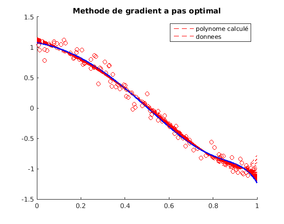

Contents
- TP2 Minimisation de la fonction log barriere
- Calcul de alpha en utilisant la fonction backslash
- test avec CVX
- Calcul du gradient en derivant la fonction de cout
- test de gradlogB par approximation du gradient par differences finis
- Calcul de la matrice Hessienne
- Methode de gradient a pas fixe
- Methode de gradient a pas variable
- Methode de gradient a pas optimal
- Methode de newton regularise
- Conclusion
close all clear all clc
TP2 Minimisation de la fonction log barriere
test de la fonction CoutLogB alpha un polynome log(1-eps)~eps
n=100; x=sort(rand(n,1)); f=cos(pi*x); sig=0.1; y=f+sig*randn(size(f)); X=[ones(size(x)) x x.^2 x.^3 x.^4 x.^5 x.^6 x.^7 x.^8 x.^9 x.^10 x.^11 x.^12];
Calcul de alpha en utilisant la fonction backslash
c=1.5;
alpha=X\y;
coutmmc=(X*alpha-y)'*(X*alpha-y)/c;
cout = CoutLogB(alpha,X,y,c);
gradBS=grad_logB(alpha,X,y,c);
% Quand C est tres grand, on retrouve bien les moindres carrees
test avec CVX
c=1.55;
tic
cvx_begin
variables ac(size(X,2),1)
minimize( -sum(log(1-(X*ac - y).^2/c^2)))
cvx_end
tCVX=toc
coutCVX = CoutLogB(ac,X,y,c);
gradCVX=grad_logB(ac,X,y,c);
% On trouve un cout faible de 0.47 avec CVX, et de 0.51 avec la fonction backslash, pour un c=1.55
CVX Warning:
Models involving "log" or other functions in the log, exp, and entropy
family are solved using an experimental successive approximation method.
This method is slower and less reliable than the method CVX employs for
other models. Please see the section of the user's guide entitled
<a href="file:////home/oqueffelec/bureau/cvx/doc/advanced.html#the-successive-approximation-method">The successive approximation method</a>
for more details about the approach, and for instructions on how to
suppress this warning message in the future.
Successive approximation method to be employed.
For improved efficiency, SDPT3 is solving the dual problem.
SDPT3 will be called several times to refine the solution.
Original size: 600 variables, 213 equality constraints
100 exponentials add 800 variables, 500 equality constraints
-----------------------------------------------------------------
Cones | Errors |
Mov/Act | Centering Exp cone Poly cone | Status
--------+---------------------------------+---------
100/100 | 1.197e+00 9.103e-02 0.000e+00 | Solved
100/100 | 1.895e-01 2.415e-03 0.000e+00 | Solved
100/100 | 1.921e-02 2.458e-05 1.277e-11 | Solved
100/100 | 2.448e-03 3.991e-07 0.000e+00 | Solved
79/ 98 | 1.199e-02 9.568e-06 8.334e-11 | Solved
19/100 | 1.726e-03 1.986e-07 1.704e-10 | Solved
73/ 99 | 9.797e-03 6.404e-06 0.000e+00 | Solved
1/ 75 | 7.015e-04 3.268e-08 0.000e+00 | Solved
1/ 63 | 6.378e-04 2.693e-08 0.000e+00 | Solved
4/ 79 | 1.006e-03 6.741e-08 0.000e+00 | Solved
7/ 88 | 1.392e-03 1.292e-07 0.000e+00 | Solved
8/ 93 | 1.294e-03 1.117e-07 0.000e+00 | Solved
67/ 92 | 1.038e-02 7.180e-06 0.000e+00 | Inaccurate/Solved
77/ 98 | 8.249e-03 4.540e-06 0.000e+00 | Solved
79/ 93 | 7.802e-03 4.056e-06 0.000e+00 | Solved
70/ 96 | 1.065e-02 7.574e-06 0.000e+00 | Solved
9/ 80 | 1.692e-03 1.910e-07 0.000e+00 | Solved
15/ 85 | 1.299e-03 1.124e-07 0.000e+00 | Solved
9/ 85 | 9.249e-04 5.678e-08 4.934e-11 | Solved
0/ 37 | 2.579e-04 4.376e-09 1.067e-11 | Solved
-----------------------------------------------------------------
Status: Solved
Optimal value (cvx_optval): +0.315683
tCVX =
33.9789
Calcul du gradient en derivant la fonction de cout
g = grad_logB(alpha,X,y,c);
test de gradlogB par approximation du gradient par differences finis
a =zeros(size(X,2),1); err = X*a-y; c =max(abs(err))+.01; fc = CoutLogB(a,X,y,c); grad = grad_logB(a,X,y,c); [n,p] =size(X); chouia =sqrt(eps); for i=1:p d =zeros(p,1); d(i) = 1; fd = CoutLogB(a+chouia*d,X,y,c); e(i) = (grad(i) + ((fc - fd)/chouia))/grad(i); end
Calcul de la matrice Hessienne
H = Hess_logB(a,X,y,c);
Methode de gradient a pas fixe
a=a*0; nt=1000; xt=linspace(0,1,nt)'; Xt=[ones(size(xt)) xt xt.^2 xt.^3 xt.^4 xt.^5 xt.^6 xt.^7 xt.^8 xt.^9 xt.^10 xt.^11 xt.^12]; % Choix du pas en utilisant la vp max de la hessien calculé precedemment vp_H=eig(H); pas=1/vp_H(1); g = 1; k = 1; nbitemax = 10000; fprintf(1,'--------------------------\n'); fprintf(1,'nb ite cout \n'); fprintf(1,'--------------------------\n'); figure(1); hold on tic; while((norm(g) > 0.005) && (k < nbitemax)) cout_pasfix = CoutLogB(a,X,y,c); % fprintf(1,'%8d %12.4f \n',k, cout); g = grad_logB(a,X,y,c); a = a - pas*g; if mod(k,100) == 0 , h1= plot(xt,Xt*a,'--r'); end; k = k+1; end tPasFix=toc; h2=plot(xt,Xt*a,'b','LineWidth',2); h3=plot(x,y,'or'); title('Methode du gradient a pas fixe'); legend([h1 h3], 'polynome calculé','donnees'); hold off % Le temps de calcul est plus rapide pour le pas fixe que pour CVX % Si le pas choisi est trop grand on risque de diverger, si % il est trop petit, la fonction convergera trop lentement % temps d'execution du pas fixe avec un pas=1/L ou L=sup lambda de la % hessien : 0.34s pour un cout de 1.01
-------------------------- nb ite cout --------------------------
Methode de gradient a pas variable
a=a*0; g=1; k=1; alpha=0.15; beta=2; tol=0.005; cout_old=0; figure(2); hold on tic; while((norm(g) > tol) && (k < nbitemax)) cout_pasvar = CoutLogB(a,X,y,c); % fprintf(1,'%8d %12.5f %12.8f \n',k, cout, pas); if(cout_pasvar < cout_old) pas = (1+alpha)*pas; cout_old = cout_pasvar; else a = a + pas*g; pas = pas/beta; end g = grad_logB(a,X,y,c); a = a - pas*g; if mod(k,10) == 0 , plot(xt,Xt*a,'--r'); end; k = k+1; end tPasVar=toc; plot(xt,Xt*a,'b','LineWidth',2); plot(x,y,'or'); title('Methode du gradient a pas variable'); legend('polynome calculé','donnees'); hold off % temps d'execution du pas variable avec alpha=0.15: 1.17s pour un cout de % 1.01

Methode de gradient a pas optimal
a =zeros(size(X,2),1); pas=0.001; g = 1; k = 1; nbitemax = 10000; figure(3); hold on tic; while((norm(g) > 0.005) && (k < nbitemax)) cout_pasopt = CoutLogB(a,X,y,c); g = grad_logB(a,X,y,c); H = Hess_logB(a,X,y,c); pas = (g'*g)/(g'*H*g); a = a - pas*g; if mod(k,100) == 0 , plot(xt,Xt*a,'--r'); end; k = k+1; end tPasOpt=toc; plot(xt,Xt*a,'b','LineWidth',2); plot(x,y,'or'); title('Methode de gradient a pas optimal'); legend( 'polynome calculé','donnees'); hold off % temps d'execution du pas optimal avec un pas initial de 0.001: 0.63s pour % un cout de 0.8
Methode de newton regularise
Avec lambda=0
a=a*0; err=0.005; g=1; k=1; lambda=0; I =eye(p); figure(4) hold on tic; while((norm(g) > err) & (k < nbitemax)) cout_newt = CoutLogB(a,X,y,c); % fprintf(1,'%8d %12.4f \n',k, cout_newt); g = grad_logB(a,X,y,c); H = Hess_logB(a,X,y,c); dir= (H+lambda*I)\g; a = a -dir; % if mod(k,10) == 0 , plot(xt,Xt*a,'--r'); % end; k = k+1; end tNewton=toc; plot(xt,Xt*a,'b','LineWidth',2); plot(x,y,'or'); title('Methode de newton regularise avec lambda=0'); legend('polynome calculé','donnees'); hold off % temps d'execution du pas optimal: 0.001s avec lambda nul, % pour un cout de 0.71 % % Avec lambda>0 a=a*0; err=0.005; g=1; k=1; lambda =sqrt(eps); I =eye(p); figure(5) hold on tic; while((norm(g) > err) & (k < nbitemax)) cout_newt = CoutLogB(a,X,y,c); % fprintf(1,'%8d %12.4f \n',k, cout_newt); g = grad_logB(a,X,y,c); H = Hess_logB(a,X,y,c); dir= (H+lambda*I)\g; a = a -dir; % if mod(k,10) == 0 , plot(xt,Xt*a,'--r'); % end; k = k+1; end tNewton=toc; plot(xt,Xt*a,'b','LineWidth',2); plot(x,y,'or'); title('Methode de newton regularise avec lambda>0'); legend('polynome calculé','donnees'); hold off % temps d'execution du pas optimal: 0.002s avec lambda tres proche de zero, % pour un cout de 0.71 % Si l'on ne regularise pas, un risque un probleme de surapprentissage

Conclusion
Pour resoudre notre probleme d'optimisation, la methode regularisee de Newton semble etre la plus performante en terme de cout minimale, de temps d'execution et de nombre d'iterations. CVX donne un cout encore plus faible mais le temps dexecution est bcp trop long (~45sec).La methode du pas optimal est un peu moins performante, mais le cout optenu et son temps dexecution reste correcte. Par contre, les methodes du pas fixe et du pas variable sont loin d'etre aussi efficace que les 2 premieres, que se soit en terme de temps de calcul ou de resultat.